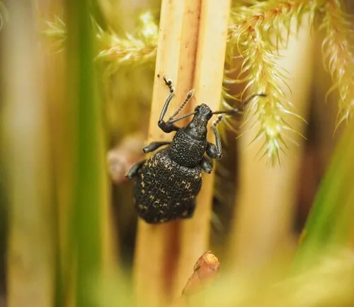

叶象甲
带长吻的甲虫和叶缘缺刻
这是与该表现相符的一种可能原因，请结合下方特征核对。

先看哪里
观察叶缘是否有半圆形缺刻，夜间看看植株上是否出现长吻甲虫。
先观察，再冲洗或搬动。找到看上去最新的伤处，轻轻翻看叶背，别晃动枝条，也看一眼叶柄和茎连接的地方。用放大镜或手机近拍，能看到整株照里容易遗漏的细节。
可能原因与下一步
象甲成虫可取食叶缘。若同时出现整株萎蔫，还要检查根部是否受损。
怎样区分相似问题
叶缘连续的缺刻提示有虫啃食；成虫头部向前伸出的喙有助于与其他甲虫区分。
找从叶缘向内的连续半圆缺口。白天找不到虫可在入夜后用灯检查。仅有叶缘缺口不能判断根也受害，若水分适宜却萎蔫，再单独查根团有无啃食痕。
现在可以做什么
入夜后用手电检查枝叶和盆沿，尤其留意新缺刻附近，拍下虫体。
次日晚查看缺刻旁原本完整的叶片，那里新增的咬口比反复清点旧缺刻更能判断取食是否持续。发现虫体时，保留一张特写，也拍下植株受损位置。
接下来观察什么
若盆土湿润植株仍萎蔫，检查根团是否也受损；少量叶缘缺刻未必能解释整株萎蔫。